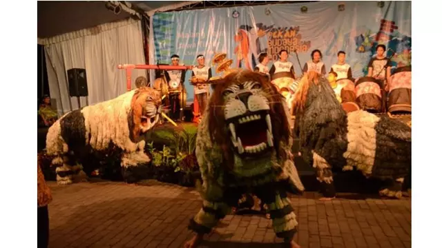
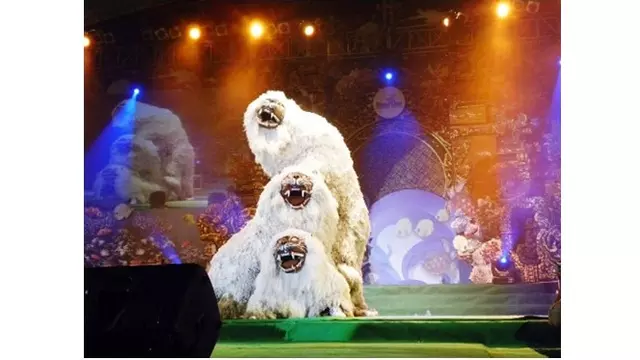

5 Fakta Menarik Tari Singo Ulung,Tarian Tradisional Khas Bondowoso
(Berita Terkini)
Kekayaan budaya dan tradisi di Indonesia memang tak ada habisnya untuk dibahas. Setiap suku bangsa di Indonesia memiliki budaya dan tradisinya masing-masing termasuk keseniannya, baik berupa seni tari, seni musik, seni rupa dan lain sebagainya.
Salah satu provinsi di Indonesia yang memiliki begitu banyak kesenian adalah Jawa Timur. Sebagian besar kesenian di provinsi ini merupakan warisan dari leluhur dan bahkan sudah menjadi bagian dari tradisi masyarakat Jawa Timur.
Salah satu kesenian warisan leluhur di Jawa Timur yang sangat unik berada di Bondowoso, yaitu Tari Singo Ulung. Tarian ini merupakan kesenian tradisional yang para penarinya menggunakan kostum menyerupai singa dan menari bagaikan singa.Jika dilihat sekilas, Tarian ini hampir mirip dengan tarian barongsai. Perbedaannya terletak pada kostum yang lebih sederhana dan tema yang dibawakan jauh berbeda. Menurut sumber sejarah yang ada, Tari Singo Ulung diciptakan oleh Kiai Singo Wulu, yaitu seorang tokoh masyarakat dan pendiri desa Blimbing, daerah di Bondowoso, Jawa Timur. Penasaran seperti apa menariknya tarian Singo Ulung di Bondowoso? Berikut fakta-fakta Tari Singo Ulung.
1. Pementasan Tari Singo Ulung bercerita tentang berdirinya desa Blimbing.
Dalam pertunjukan Tari Singo Ulung bercerita tentang berdirinya desa Blimbing. Dalam tarian itu terdapat penari singa, panji (menggambarkan Jasiman), dua orang yang menggunakan rotan (menggambarkan pertarungan Jasiman dan Kiai Singo Wulu), penari perempuan (menggambarkan istri Kiai Singo Wulu) dan kiai (menggambarkan Kiai Singo Wulu). Penari tersebut menari sambil berdialog layaknya sebuah drama.
Konon menurut cerita yang berkembang di masyarakat, awalnya Kiai Singo Wulu merupakan seorang pendatang dan pendakwah dari daerah lain. Dalam perjalanannya, ia berhenti di sebuah hutan dan beristirahat di bawah pohon belimbing. Kedatangan Kiai Singo Wulu tersebut membuat murka penguasa hutan disana yang bernama Jasiman, sehingga terjadilah perkelahian antara keduanya. Dalam perkelahian itu Kiai Singo Wulun dan Jasiman sama-sama menggunakan kayu rotan yang ada di hutan tersebut sebagai senjata. Dengan kesaktiannya, Kiai Singo Wulu kemudian berubah wujud menjadi harimau putih.
Hingga akhirnya Jasiman tidak mampu melawan dan menyerah. Dalam percakapan setelah pertarungan tersebut, Jasiman menyadari bahwa ternyata keduanya berasal dari perguruan yang sama. Setelah mengenal Kiai Singo Wulu lebih jauh, Jasiman pun merasa kagum dengan kehebatan dan sifatnya yang sederhana. Hal itu membuat Jasiman sadar dan masuk Agama Islam. Jasiman juga ingin menikahkan Kiai Singo Wulu dengan adiknya.
Kemudian ketiganya memutuskan untuk membangun sebuah desa di daerah hutan tersebut dan diberi nama desa Blimbing. Desa tersebut merupakan tempat awal Kiai Singo Wulu dan Jasiman bertemu. Bersama dengan masyarakat yang ada, lalu membangun sebuah desa yang makmur dan sejahtera. Atas jasanya, kemudian masyarakat di sana mengangkat Kiai Singo Wulu sebagai kepala desa pertama di desa Blimbing.
2. Tari Singo Ulung menjadi tradisi.
Dalam perkembangannya, Tari Singo Ulung menjadi sebuah tradisi yang rutin dipentaskan setiap tahun di desa Blimbing. Tari tradisional ini biasanya dipentaskan pada tanggal 15 sya'ban atau menjelang bulan Ramadhan untuk acara bersih desa. Tarian tersebut juga sering ditampilkan di acara peringatan hari jadi Bondowoso.
3. Keberadaan Tari Singo Ulung masih terjaga
Tari Singo Ulung masih terus dilestarikan dan dipelajari oleh beberapa sanggar seni di Bondowoso hingga saat ini. Selain ditampilkan pada acara-acara besar, tarian ini juga sering ditampilkan di acara lain seperti penyambutan tamu dan festival budaya. Hal ini merupakan upaya melestarikan dan memperkenalkan kepada masyarakat luas tentang kesenian Tari Singo Ulung.
4. Kostum penari menyesuaikan peran.
Seperti Tarian lainnya, Tarian Singo Ulung juga memiliki kostum yang menarik. Kostum yang digunakan oleh para penari tarian ini berbeda-beda menyesuaikan peran yang dibawakan.
Untuk penari singo menggunakan kostum menyerupai singa yang terbuat dari tali raffia berwarna putih. Tali tersebut diurai sehingga terlihat seperti bulu. Kepala singa yang digunakan mirip dengan kepala singa pada Singo Barong, Reog Ponorogo. Sedangkan kostum panji atau Jasiman menggunakan kostum seperti Tari Topeng.
Kemudian untuk penari wanita menggunakan busana tradisional seperti kebaya dan sampur. Penari warok menggukan pakaian serba hitam dengan kaos berwarna merah putih khas Madura dan membawa rotan.
5. Menggunakan musik tradisional yang sederhana.
Untuk mengiringi pertunjukan Tarian Singo Ulung ini menggunakann alat Musik gamelan tradisional yang cukup sederhana. seperti kendang, terompet, ada pula yang menggunakan kenong telo dan lain-lain. Meskipun sederhana, alunan musik tradisional ini dapat menambah keseruan dan nilai atraktif dari pertunjukan tarian Singo Ulo.
Contact
Silahkan Kirimkan Saran dan Kritik melalui form ini
Malang
mochsuryasyahbana@gmail.com
+62 895-6309-09257